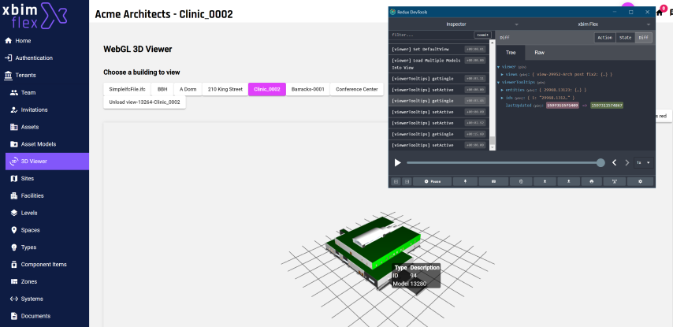

xbim Flex is a cloud-based service to host and manage BIM data using OpenBIM format and Open APIs.
It's a free for personal use, and designed to make it very simple to work with building data in open formats. You can upload a model in IFC format, and by using our simple REST APIs can interact with the data and visualise the the model in seconds.
To make things even easier we've provided some front-end libraries so you can bootstrap a new application in seconds. While you can just use our pre-generated Typescript libraries (both generic and for Angular) to access our services, we recommend using our Angular Flex Webkit library, which we're using in this demo.
Our own applications such as are built on exactly the same Webkit library client APIs so all those features are available to you, and obviously we'll be adding more features in future. If you've not seen already you can view a public demo here:
You (and your users / customers) retain ownership of your/their data, and the Flex access control systems ensure only people you authorise can access your data. For mode details see the Flex Terms of Service and Privacy Policy
This repo demonstrates some of the functionality of Flex. We'll be adding more samples soon to don't forget to
git pull frequently!
Here's a quick overview of the Flex architecture. In this repo, we're building an application in the purple section at the top.
A key element of the Webkit solution is how it manages data using the 'Redux' state pattern. In a highly asynchonous application such as this, where there are many interactions with the Flex service via an API, the state management pattern simplifies the code required to track state changes. We employ this pattern using the NGXS library, and use it to undertake all interactions with our API. That includes:
To see how state is managed and how actions are trigger to change state we recommend installing the Redux Devtools extension in your chosen browser. 
To see the demo in action, in the next section we'll look at authentication and getting your users signed in.
| Label | {{element.label}} | Value | {{element.value}} |
|---|